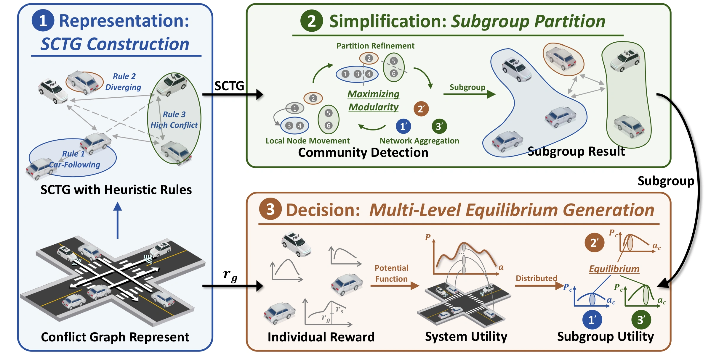
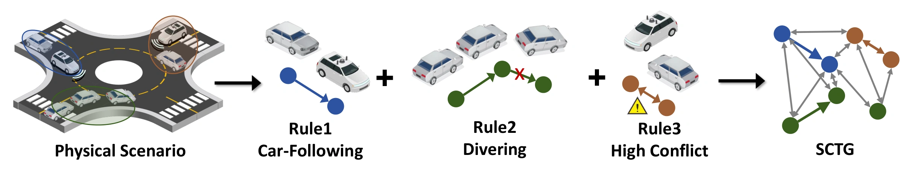
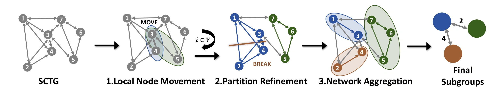
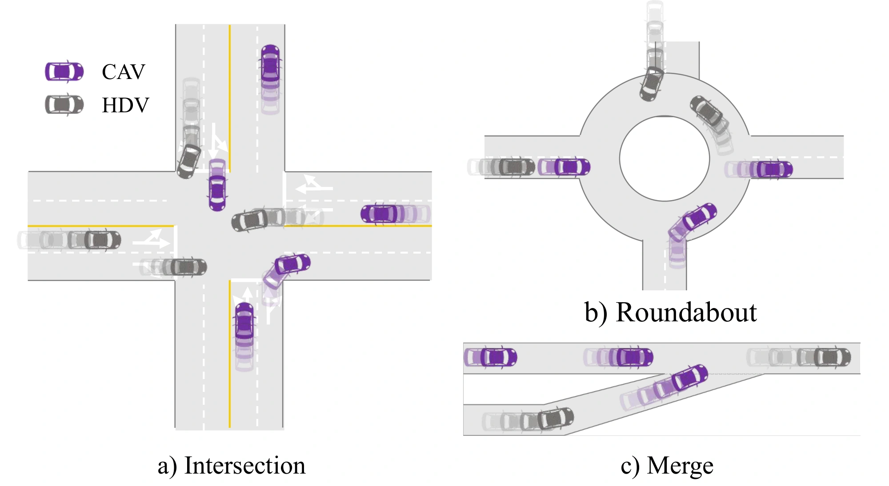
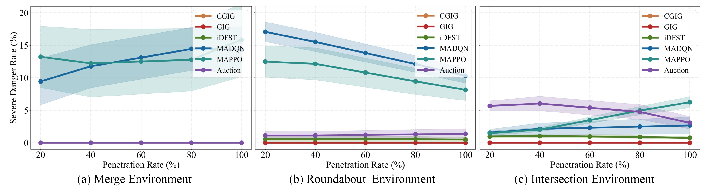
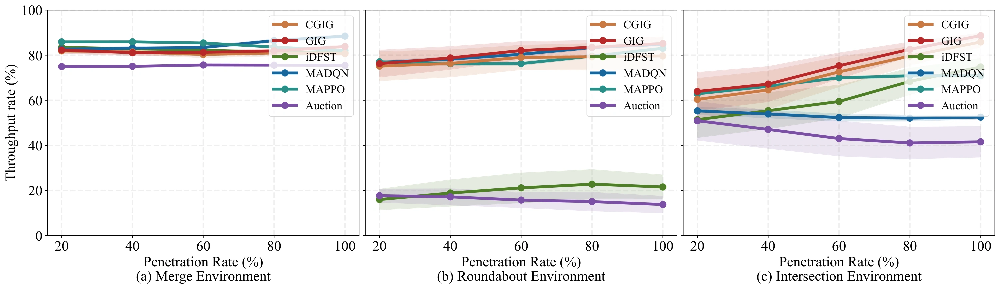
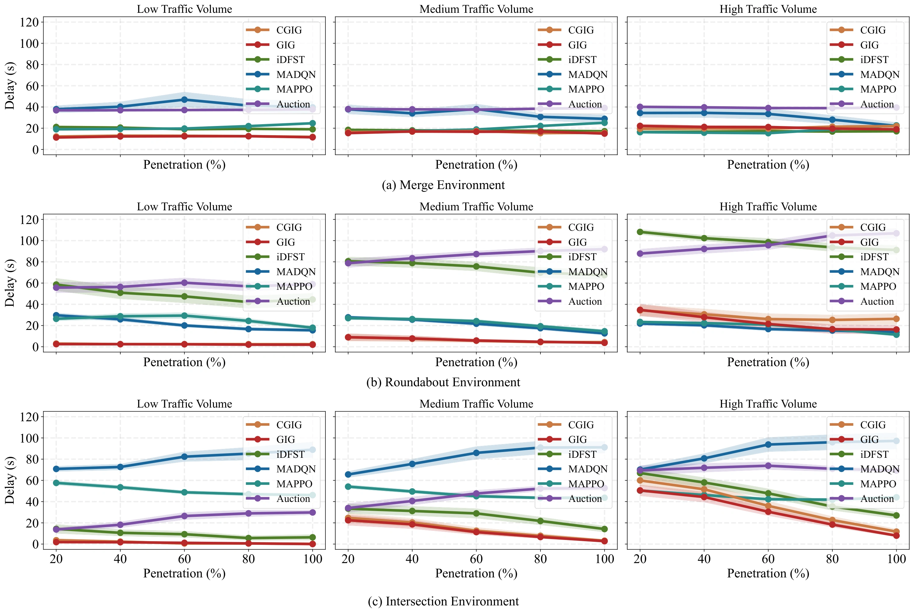
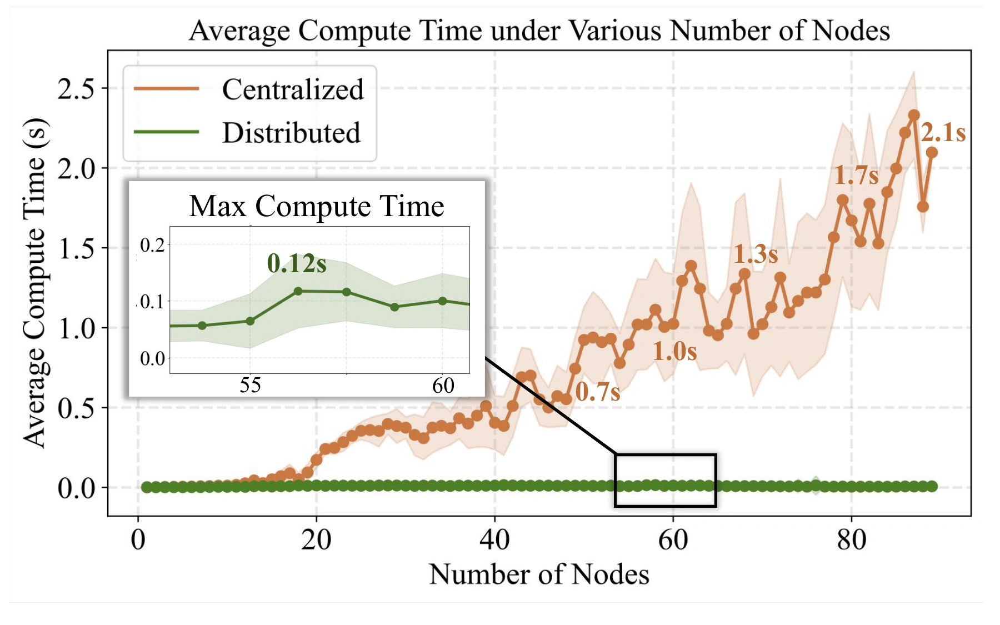

Game in Graph: Distributed Cooperative Driving Framework for Multi-Level Equilibrium in Mixed Traffic
Represent traffic conflicts. Coordinate the vehicles that interact most.

Overview
How can autonomous vehicles cooperate when human drivers share the road, their intentions are uncertain, and the number of interacting vehicles keeps changing? A single centralized problem becomes expensive as traffic grows, while a purely system-level plan can conflict with a human driver's own incentives.
Game in Graph (GIG) addresses these challenges by organizing cooperation around the structure of traffic conflicts. It represents vehicles as a Spatiotemporal Conflict Topological Graph (SCTG), groups strongly interacting vehicles, and solves smaller cooperative decision problems using a potential-game formulation. The same framework is evaluated in merging, roundabout, and intersection scenarios.
Connected autonomous vehicles (CAVs) execute the coordinated actions. Human-driven vehicles (HDVs) remain uncontrolled; their observed behavior is used to update preference estimates and adapt the surrounding CAVs' decisions.
Method
Three connected steps turn a changing traffic scene into tractable cooperative decisions.
1. Represent vehicle interactions
Vehicles are graph nodes. Edges distinguish car-following, fixed precedence, and unresolved crossing conflicts; their weights capture how closely vehicles may reach a shared conflict point. Traffic rules retain the relationships needed for coordination, including critical conflicts that require joint consideration.

2. Partition high-conflict communities
Conflict-aware modularity and the Leiden algorithm group vehicles with strong interactions into the same community. This concentrates computation where coordination matters most. The active vehicle set is checked every 0.1 s; repartitioning is triggered by node-set changes or critical conflicts requiring co-assignment.

3. Coordinate with individual incentives
The potential function is constructed from individual safety, efficiency, and comfort rewards. Under the exact-potential construction, a local maximizer of the joint potential is also a local Nash equilibrium: no vehicle can improve its modeled reward through a small feasible unilateral deviation.
For scalability, communities solve conditional subproblems using predicted external actions. These distributed updates approximate the joint planning problem. Only the first control step is executed before the next cycle, and HDV preference estimates are updated from newly observed behavior.
Experimental Results
Evaluation spans three traffic geometries, three traffic volumes, and five CAV penetration levels: 45 scenario–flow–penetration conditions.

Lower macro-average delay
Higher macro-average throughput rate
Computation speedup at the largest tested scales
Delay and throughput improvements are relative to MAPPO, the strongest external efficiency baseline in the evaluation, with equal weight assigned to the 45 conditions. The computation comparison is against centralized GIG (CGIG).
Safety across traffic scenarios
GIG and CGIG achieve zero observed severe-danger rate across the tested conditions. Severe danger is evaluated using post-encroachment time (PET) below 1.5 s.

Efficiency under the same safety-completion criterion
GIG achieves the lowest macro-average delay and highest macro-average normalized throughput rate. Throughput rate measures valid passed vehicles relative to generated vehicles, accounting for differences in realized arrivals. These aggregate results do not imply an identical ranking in every individual condition.

Following the manuscript's safety-completion criterion, vehicles involved in PET < 1.5 s interactions receive no valid passage and are assigned the full-horizon delay. Other vehicles in the same episode retain their measured contributions.
Delay across traffic volumes and penetration levels

Scalability through graph structure
The scalability study increases the system size from 10 to 80 nodes. As the centralized problem grows, distributed GIG concentrates computation within smaller high-conflict communities.
The maximum distributed computation time in the reported experiment is 0.12 s, supporting near-real-time planning at the tested scales.

Virtual–Physical Validation
Closed-loop tests combine two physical CAVs with simulated traffic. An expanded 14-vehicle configuration includes 2 physical CAVs, 6 GIG-controlled simulated CAVs, and 6 virtual HDVs. Larger configurations involve more than 30 participating vehicles within the virtual–physical setup.
These experiments demonstrate hardware feasibility and coordination with a larger mixed fleet. The videos at the end of this page show the large-scale test results.
Code and Resources
The initial code release provides a compact implementation with fixed-seed demonstrations for intersection, roundabout, and merging scenarios. It supports method inspection and lightweight testing; the complete evaluation package is planned for release after publication.
Large-scale Test Results